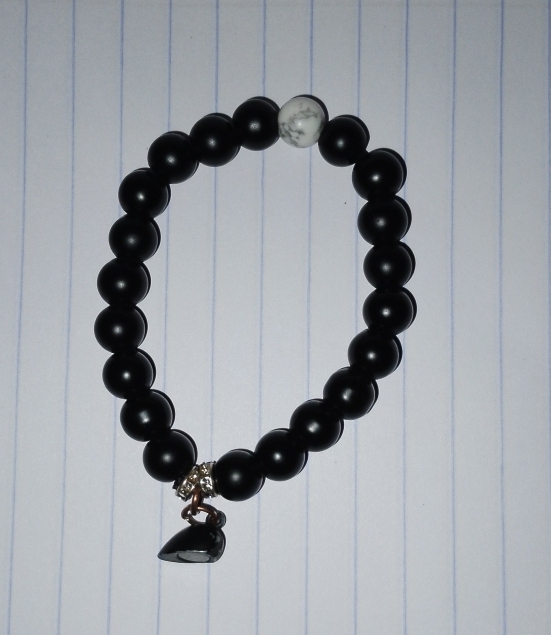

Welcome to The Kamakis Bead Art Shop!
Welcome to The Kamakis Bead Art Shop, your one-stop destination for premium beads and beading supplies.
Whether you're a seasoned jewelry maker or just starting your creative journey, we offer an extensive collection
of high-quality beads in every shape, size, and color. Let us inspire your next masterpiece with our carefully curated selection.
Shop Now
About Us
At The Kamakis Bead Art Shop, we are passionate about providing the finest quality beads for all types of creative projects.
Founded with a love for artistry and craftsmanship, we offer a wide variety of beads, from classic glass to unique gemstone options.
We are dedicated to helping you bring your artistic vision to life with high-quality, affordable beads.
Explore Our Exquisite Collection of Beads
We offer a wide variety of beads in different materials, colors, and sizes to suit every style and need.
Whether you're looking for vibrant glass beads, elegant gemstone beads, eco-friendly wooden beads, or intricate seed beads,
we have something to inspire every creator.

Gemstone Beads
Add a touch of natural beauty to your jewelry designs. Each bead is unique, making your creations truly one-of-a-kind.
$5.00

Glass Beads
Versatile and vibrant beads perfect for bold jewelry pieces and intricate embellishments.
$10.00

Appearing Beads
Experience a natural, bohemian feel with our sustainable wooden beads that add warmth and texture to any design.
$3.50

Seed Beads
Tiny yet essential, seed beads are perfect for detailed patterns and intricate beadwork.
$2.00
What Our Customers Say
"I bought a set of gemstone beads from The Kamakis Bead Art Shop, and I’m absolutely in love with them!
The quality is unmatched, and they were perfect for my latest jewelry collection." — Sarah L.
"I have been looking for eco-friendly beads for my designs, and I found exactly what I needed here!
The wooden beads have such a lovely finish, and they add the perfect touch to my creations." — Emily K.
"The selection of glass beads is amazing! I found everything I needed for my beading project, and the prices are very reasonable.
I’ll definitely be coming back!" — Michael D.